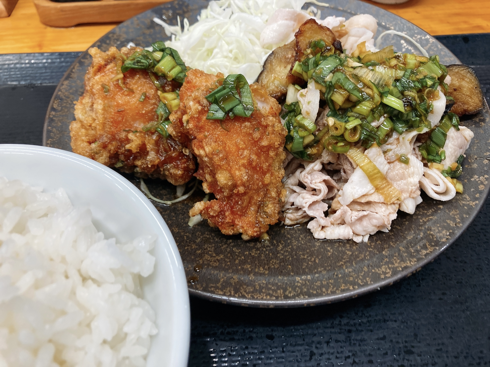
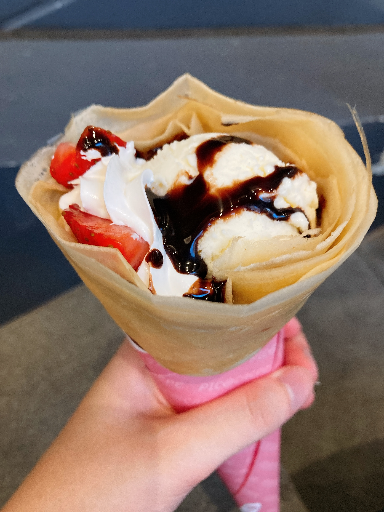

大収穫とはこんな日のこと
昨日とはうってかわって、今日は進捗がたくさん。まず午前中眼科に行って定期検診とコンタクト注文を終わらせるという。えらい。最近平日は動き回れないので……。
その足で溝の口へ。先にお昼ご飯を食べました。

イミグランデの通りのちょっと手前にある「からやま」。よくお世話になる推し唐揚げです。普段は油淋鶏定食を食べるのだけれど、今日は期間限定メニューを。青唐辛子たれの唐揚げに冷しゃぶがついてくるという不思議な代物。
からやま、唐揚げは言うまでもないとして、定食についてくる野菜と米がまじで美味いので全力で推してる。この定食とか、青唐辛子たれの辛さが絶妙すぎて、それのかかったキャベツだけで大盛りご飯の半分が消えた。毎度油淋鶏頼むのも油淋鶏のタレのかかった激ウマ野菜を食べるためだったりする。最近胃が小さくなってきていて毎度大盛りにするのを躊躇うんだけど、毎度野菜と唐揚げが美味すぎてあっという間に食べきってしまう。この白米もすごくて、決して固いわけではないがきっちり米が一粒一粒確かな食感を訴えてくる程度の柔らかさとかいう神がかった炊き加減で感動で涙が止まらない。外食っていつも好みの炊き加減の米を食べられるとは限らなくて、どことは言わない推しラーメン屋とかぶっちゃけこのスープ無かったらこの米食いきれねえなとか思ってたりするけど、ここはこの安さこの手軽さでこんなに素晴らしい炊き加減いただいてよろしいんですか！？と不安になるレベル。
実は次回100円引きクーポンがもらえるので通い続けるとずっと100円引きとかいうお得仕様があったり。溝勢音ゲーマーの皆様はぜひ一度。
溝はイミグランデの方が消えてしまったせいで今WACCAが一台しかない。それは承知の上で様子見もかねて溝タイステに来てみたのだけれど、たまにいらっしゃる方の1クレ分を休憩と思えば土曜でも特にストレスなく続けていられる程度の混雑具合だった。某と鉢合わせて取り合いになるとかじゃなければ問題なさそう。静かめだしその気になればすぐグルコスもできるしよさげ。
その、たまにいらっしゃる方々がおつよすぎて戦慄していました。ExitiumSSS+のⅫ金レって一体何だよ。あとで確認したら楽曲別全ランにいらっしゃって恐怖……() 手首がきっちり使えるタイプの方で、特に慌ただしさもなくひょいひょいと腕動かすだけで13+FCとかしれっと出しててすげえなあになった。自分は手首を使うのが苦手なので練習しないと。多分あれくらい上手いとその気になればすぐ裏君を侍らせられるんでしょう1。あのレベルで上手い人間近で見たの初めてだったのでちょっと感動した。あの脱力加減、こっそり目標にさせていただきます。
珍しく初クレの方もいらっしゃって、しょたにべた褒めされるチュートリアルを後ろから眺める人になった。いいでしょうそのしょた、かわいいよね（何様）。ぜひ次もまた遊びに来てくれるとうれしいですね。
今日の進捗はこちら。後半の方のクレで13がたくさん伸びました。
進捗達2 pic.twitter.com/gfTgPSXBwT
— ₍₍⁽⁽🍳₎₎⁾⁾ (@sal_pipr) August 28, 2021
前は速度的に厳しかったEternal Endingとか、認識上難しかったサイクルヒットとかが軒並みなんとかなってくれて感動した。ぺこみこ最初で拗れて994まで減った後耐えて一発でSSS+出てくれたので感動した。だんだん全方位ノーツ混じりが読めるようになってきた感触があるので、もぺもぺとかSSS+狙いに行ってよさそう。
新規鳥はGot more raves?、16bit、Arcahv、DOOF SENC。知らない間にもう13半分以上がSSS+で埋まってるらしくて、13+触りださないとなあなどと。今乗ってない13達は何らかの理由でどこかができなくて乗せるのが厳しい子達ばかりなので、SSS出せる13+探したほうがすぐ2600到達できるんじゃないかなあと。ちなみに最高レート自体は今日更新しましたやったね。新枠最高がOuvertüreSSS+の状態でこれなので、新曲増えたらもうちょっと伸ばせそう。
下埋めの方もいい感じで、exp解禁自体は全曲終わった。気がする。見落としがなければ。9台のAM埋めも着々と進んでおります。毎回、最初数クレは判定がわからなくて混乱するので、序盤にフリータイムクレを挟むといい調整になるかもなあなどと。11触りきったら果たして全ラン何位になるんでしょうか？楽しみですね。
微妙な要素でランキングにいる人 pic.twitter.com/23dyYYEkwv
— ₍₍⁽⁽🍳₎₎⁾⁾ (@sal_pipr) August 28, 2021
ランキングいろいろ見てたらステージアップⅨ受験者が想像以上に少なかったので、ちょいと伸ばしてしばらく居座ることにしました。1曲目理論値出そうで出ないんだよなあ。D4DJのはexp譜面はサビのスライドが気持ちよくてたのしい。infは知らない。
飯ってほどではないけど小腹の空いた夕方に帰ることになったので、クレープをちょいと。

暑かったのでアイスの入ってるやつ。クレープ食べてるルーン君とか描いてみたいよね。
-
なのに侍らせてないんだなあと思いながら見ていた。興味のある13+や14だけ埋めてそうな雰囲気。やっぱり裏君に関しては圧倒的な需要と供給のずれがとてもかなしい。 ↩︎